① 최근 기간만으로 학습하는 방식(recent250 / winvote)을 후보로 둘지 ② 처음 보는 종목 점수(0.418)가 낮은 문제 ③ LLM 으로 기사 내용을 분류하는 실험을 소량 해 볼지
| 말 | 뜻 |
|---|---|
| 갭 (gap) | 전날 종가 대비, 오늘 아침 개장 전 마지막 시간외 거래 가격이 몇 % 움직였나. 예: 전날 100달러, 아침 8시 102달러 → 갭 +2% |
| vol20 | 그 종목의 최근 20거래일 하루 수익률 표준편차. "이 종목은 평소 하루에 이 정도 움직인다" |
| gap_z | 갭 ÷ vol20. 평소 움직임에 비해 이번 갭이 얼마나 큰지. 변동성 큰 종목의 2% 와 작은 종목의 2% 를 같은 눈금으로 비교하려고 나눔 |
| ext_range_z | 시간외 거래 동안의 최고가−최저가 폭 ÷ vol20. 밤사이 가격이 많이 출렁였는지 |
| B 규칙 | 민영이 만든 규칙. gap_z 를 출렁임만큼 조금 깎은 점수 s 를 경계 a, b 로 잘라 5등급을 찍음. 학습하는 숫자가 5개뿐 |
| 디코딩 | 모델이 낸 확률이나 점수를 실제로 찍을 등급(0~4)으로 바꾸는 방법 |
| 말 | 뜻 |
|---|---|
| train / val | train 은 학습에 쓰는 기간, val 은 학습 때 안 보여 주고 채점만 하는 기간 |
| fold4 | val 이 2026-03-04 ~ 05-28 인 마지막 검증 구간. 우리가 주 지표로 보는 점수 |
| embargo | train 과 val 사이에 일부러 비워 둔 12거래일. 실제 평가에서도 데이터 끝과 평가 시작 사이가 비어 있어서 똑같이 맞춤 |
| 처음 보는 종목 | 학습에서 일부러 뺀 10종목. 평가에 새 종목이 나오니 그 상황을 흉내 냄 (unseen) |
| bootstrap | 검증 60일을 무작위로 다시 뽑아(같은 날 중복 허용) 1,000번 채점. 점수가 날짜 운에 따라 얼마나 흔들리는지 봄 |
| λ, δ, γ, β, w | 규칙에 정보를 더할 때 "얼마나 반영할지"를 정하는 숫자. 여러 후보 중 train 점수가 가장 좋은 걸 고름. 0 이 골라지면 그 정보를 안 쓴다는 뜻 |
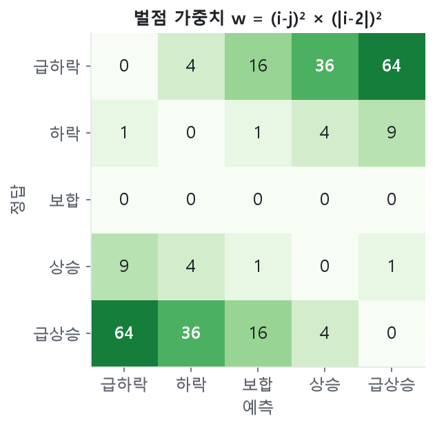
결국 점수는 크게 움직인 날(fold4 val 의 19.5%)에 방향을 맞혔느냐로 거의 정해짐.
| 폴드 | train (기준일) | train 일수 | 비워 둔 12거래일 (embargo) | val (기준일, 60거래일) | 용도 |
|---|---|---|---|---|---|
| fold1 | 2024-08-13 ~ 2025-05-27 | 197 | 2025-05-28 ~ 06-12 | 2025-06-13 ~ 09-09 | 참고 |
| fold2 | 2024-08-13 ~ 2025-08-21 | 257 | 2025-08-22 ~ 09-09 | 2025-09-10 ~ 12-03 | 참고 |
| fold3 | 2024-08-13 ~ 2025-11-14 | 317 | 2025-11-17 ~ 12-03 | 2025-12-04 ~ 2026-03-03 | 참고 |
| fold4 | 2024-08-13 ~ 2026-02-12 | 377 | 2026-02-13 ~ 03-03 | 2026-03-04 ~ 05-28 | 주 지표 |
guard(day) 를 거침. 대상일 09:30 이후 정보를 읽으려 하면 점수 대신 오류가 남.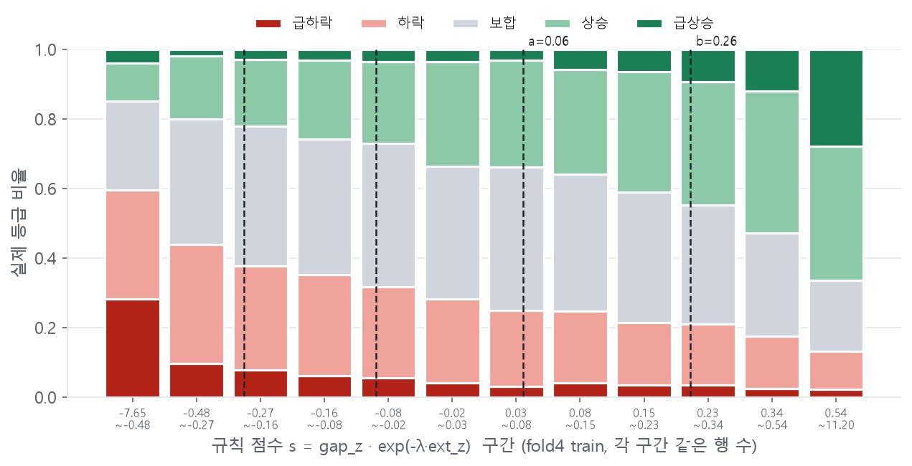
막대 하나가 한 묶음. 왼쪽일수록 아침에 크게 떨어져 있던 종목, 오른쪽일수록 크게 올라 있던 종목. 왼쪽 끝은 빨강(하락)이 많고 오른쪽 끝은 초록(상승)이 많음 = 갭 방향이 그날 방향을 상당히 맞힘.
s = gap_z × exp(−λ × 밤사이 출렁임). 출렁임이 크면 갭을 조금 덜 믿음. fold4 에서 train 이 고른 값 λ 0.2, a 0.061, b 0.256. |s| 가 a 보다 작으면 보합, a~b 면 상승·하락, b 이상이면 급등락 (점선 4개).
train 에서 실제 급등락은 13.6% 인데 규칙은 행의 40%를 급등락으로 찍고 보합은 20% 만 찍음. 그런데 맨 오른쪽 묶음도 실제 급상승은 28% 뿐. 방향은 대체로 맞지만 크기는 자주 틀림.
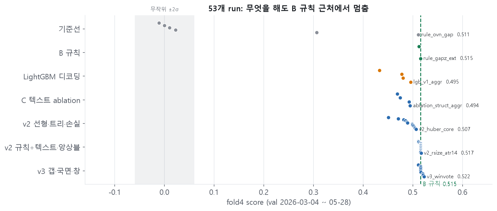
점 하나 = 실험 하나. 초록 점선 = B 규칙(0.515). 회색 띠 = 무작위로 찍어도 나오는 범위.
| 묶음 (실험 수) | 무엇을 바꿔 봤나 | 최고 fold4 |
|---|---|---|
| 기준선 (6) | 무작위·전부 보합·어제 따라하기·장전 등락·갭 | 0.511 |
| B 규칙 (2) | 갭 ÷ 변동성, + 밤사이 출렁임 | 0.515 |
| LightGBM 디코딩 (4) | 같은 모델, 확률→등급 바꾸는 방법만 | 0.495 |
| C 텍스트 추가 (4) | LightGBM 에 뉴스·Reddit 피처 넣기 | 0.494 |
| v2 선형·트리 (12) | 모델 4종, 손실 함수 6종 | 0.507 |
| v2 규칙+정보 (16) | 규칙에 텍스트·실적·변동성 얹기 | 0.517 |
| v3 갭·국면·기간 (9) | 시장 갭 분리, 시장 분위기, 최근 기간만 학습 | 0.522 |
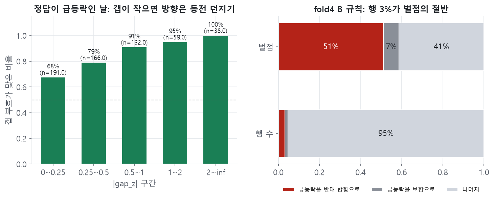
fold4 검증 3,000행(50종목 × 60일)에서 규칙이 받은 벌점을 한 행씩 어디서 나왔는지 나눠 봄.
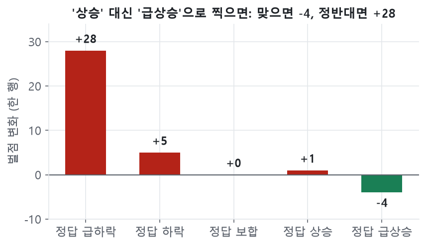
직접 해 봄: fold4 에서 규칙이 '상승'으로 찍은 575행을 전부 '급상승'으로 바꿔 채점. 그 575행의 실제 결과는 급하락 23 · 하락 166 · 보합 180 · 상승 155 · 급상승 51. 맞아서 줄어든 벌점보다 반대여서 늘어난 벌점이 커서 분자 +1,425, 점수 0.515 → 0.494.
급등락으로 찍는 경계 b 를 어떤 정보에 따라 올리거나 내릴 수 있게 하고, 얼마나 움직일지(δ)는 train 이 고르게 함. δ 가 음수면 그 정보가 클 때 경계를 올림 = 급등락을 덜 찍음.
| 더해 본 정보 (모두 "크게 움직일 것" 신호) | δ fold1/2/3/4 | train 의 선택 |
|---|---|---|
| 오늘 실적 발표가 있음 | −0.2/−0.1/−0.2/−0.2 | 덜 찍음 |
| 시장 전체 갭이 큼 | −0.3/−0.3/−0.3/−0.3 | 덜 찍음 |
| 최근 60일 급등락이 잦은 종목 | −0.3/−0.3/−0.3/−0.1 | 덜 찍음 |
| atr14 (최근 14일 평균 움직임) | −0.3/−0.1/−0.3/−0.1 | 덜 찍음 |
| 시장 20일 변동성 | +0.3/+0.2/+0.3/+0.3 | 더 찍음 |
| 사건 단어 수 (기사 제목) | 0/0/0/0 | 안 씀 |
EDA 에서 실적 다음 날은 64% 가 급등락이었음. 그런데도 train 은 그날 덜 크게 찍는 쪽을 고름. 방향이 반반이면, 맞혀서 줄어드는 4 보다 틀려서 늘어나는 28 이 더 크기 때문.
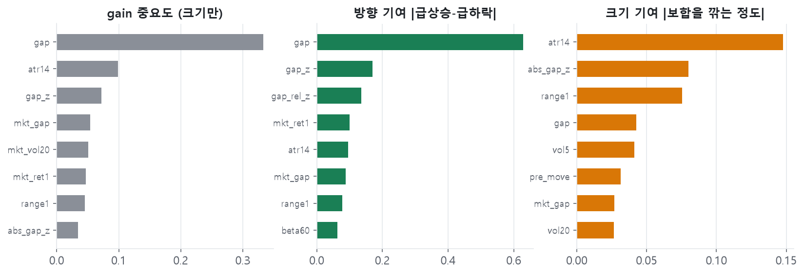
흔히 보는 중요도(회색, gain)는 "그 피처를 얼마나 많이 썼나"만 알려 주고, 예측을 위로 밀었는지 아래로 밀었는지는 안 알려 줌. 그래서 예측값을 피처별 몫으로 쪼개는 기여도(pred_contrib, SHAP 와 같은 방식)로 다시 계산함.
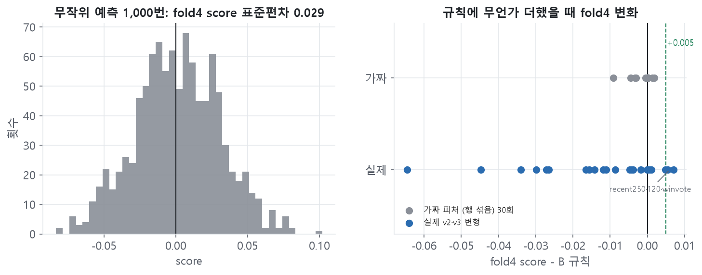
0.515 와 0.522 는 정말 다른가? 점수가 원래 얼마나 흔들리는지부터 잼.
src/model.py + 숫자 5개짜리 gapz_rule.json 으로 돌아가고 main.py check 통과.fold4 에서 처음 보는 10종목 점수는 0.418, 전체는 0.515. CVS 0.03 · NFLX 0.10 · WELL 0.20 세 종목이 특히 낮음 (부록 A8). 실제 평가 종목 20개 중 10개가 새 종목이라, 실제 점수는 fold4 보다 낮게 나올 가능성이 큼.
| 안건 | 근거 | 제안 |
|---|---|---|
| 최근 기간만 학습 (recent250 / winvote) | 4월 0.517→0.527, 5월 0.532→0.538, 3월은 같음. 확실한 차이는 아님 (11쪽) | 10월이 2026 상반기(급등락 19.5%)와 비슷한 시기라고 보면 후보로 둠 |
| LLM 으로 기사 분류 | 점수를 올릴 수 있는 건 방향 정보뿐 (9쪽) | 실적·가이던스 기사만 소량. 비용 먼저 추정 |
| 홀드아웃 1회 채점 | 아직 안 봄 | 최종 모델 정한 뒤 한 번만 |
| 학습 기간을 5/28 까지 늘리기 | 지금 v1 은 5/11 까지로 학습 | 홀드아웃 채점 뒤 |
A1 실험 검증표 · A2 학습된 파라미터 · A3 점수식 분해 · A4 폴드별 · A5 월별 · A6 bootstrap · A7 gap_z 기여 · A8 처음 보는 종목 · A9 재현 · A10 기록과 다른 점 · A11 예상 질문
| 묶음 | run | 바꾼 것 (이전 run 대비 하나) | f1 | f2 | f3 | f4 | 평균 | unseen | vs 규칙 f4 |
|---|---|---|---|---|---|---|---|---|---|
| 기준선 | random_uniform | 5등급 균등 무작위 | -0.069 | 0.012 | -0.037 | 0.010 | -0.021 | 0.020 | -0.5055 |
| 기준선 | random_prior | 무작위 비율을 train 정답 비율로 | 0.003 | -0.049 | -0.033 | 0.022 | -0.014 | -0.046 | -0.4930 |
| 기준선 | flat | 전부 보합 | 0.000 | 0.000 | 0.000 | 0.000 | 0.000 | 0.000 | -0.5154 |
| 기준선 | yesterday | 어제 등락 label 그대로 | -0.131 | -0.116 | -0.069 | -0.011 | -0.082 | -0.008 | -0.5262 |
| 기준선 | rule_pre_move | 피처: 프리마켓 안 등락(pre_move), |s| 경계 train | 0.201 | 0.221 | 0.205 | 0.306 | 0.233 | 0.299 | -0.2092 |
| 기준선 | rule_ovn_gap | 피처: 전일 종가 기준 갭 (A) | 0.423 | 0.404 | 0.391 | 0.511 | 0.432 | 0.412 | -0.0041 |
| 규칙 | rule_gapz | 피처: 갭 ÷ vol20 (B) | 0.433 | 0.431 | 0.401 | 0.512 | 0.444 | 0.415 | -0.0030 |
| 규칙 | rule_gapz_ext | 피처: × exp(−λ·ext_range_z 표준화), λ∈{0..0.5} train (B 최종 = 제출 v1) | 0.434 | 0.436 | 0.402 | 0.515 | 0.447 | 0.418 | +0.0000 |
| LightGBM | lgb_v1_argmax | 모델: LightGBM 다항, B 피처 26개, 디코딩 argmax | 0.325 | 0.343 | 0.345 | 0.433 | 0.361 | 0.351 | -0.0828 |
| LightGBM | lgb_v1_match_train | 디코딩: 기대 등급을 train 정답 비율 분위로 | 0.362 | 0.409 | 0.386 | 0.478 | 0.408 | 0.378 | -0.0379 |
| LightGBM | lgb_v1_match_recent | 디코딩: 비율을 train 마지막 60일 정답 비율로 | 0.363 | 0.399 | 0.391 | 0.480 | 0.408 | 0.379 | -0.0351 |
| LightGBM | lgb_v1_aggr | 디코딩: 급등락 비율 ×k, 보합 ÷k (k 는 train 마지막 40일) | 0.346 | 0.420 | 0.392 | 0.495 | 0.413 | 0.416 | -0.0200 |
| 묶음 | run | 바꾼 것 (이전 run 대비 하나) | f1 | f2 | f3 | f4 | 평균 | unseen | vs 규칙 f4 |
|---|---|---|---|---|---|---|---|---|---|
| ablation | ablation_struct_aggr | 피처: + text_overnight_hours (C) | 0.321 | 0.407 | 0.375 | 0.494 | 0.399 | 0.408 | -0.0209 |
| ablation | ablation_struct+news_aggr | 피처: + C 뉴스 2개 | 0.377 | 0.395 | 0.390 | 0.492 | 0.413 | 0.416 | -0.0232 |
| ablation | ablation_struct+reddit_aggr | 피처: + C Reddit 3개 | 0.363 | 0.411 | 0.393 | 0.469 | 0.409 | 0.368 | -0.0464 |
| ablation | ablation_struct+text_all_aggr | 피처: + C 텍스트 7개 전부 | 0.361 | 0.403 | 0.387 | 0.474 | 0.406 | 0.374 | -0.0411 |
| 묶음 | run | 바꾼 것 (이전 run 대비 하나) | f1 | f2 | f3 | f4 | 평균 | unseen | vs 규칙 f4 |
|---|---|---|---|---|---|---|---|---|---|
| v2 규칙 | v2_rule_base | λ 후보만 {0..0.4} 로 (models2.LAMS) — 재구현 기준 | 0.448 | 0.436 | 0.402 | 0.515 | 0.450 | 0.418 | +0.0000 |
| v2 규칙 | v2_rule_lex_event | 갭 신뢰도 γ·z(사건 단어 수) | 0.448 | 0.436 | 0.402 | 0.515 | 0.450 | 0.418 | +0.0000 |
| v2 규칙 | v2_rule_lex_n | 갭 신뢰도 γ·z(기사 제목 수) | 0.448 | 0.436 | 0.402 | 0.515 | 0.450 | 0.418 | +0.0000 |
| v2 규칙 | v2_rule_news_c | 갭 신뢰도 γ·z(C 장 마감 후 기사 수) | 0.448 | 0.436 | 0.402 | 0.515 | 0.450 | 0.418 | +0.0000 |
| v2 규칙 | v2_rule_text_big | 갭 신뢰도 γ·z(TF-IDF 급등락 확률) | 0.451 | 0.432 | 0.403 | 0.511 | 0.449 | 0.417 | -0.0042 |
| v2 규칙 | v2_rsize_earn_now | 급등락 경계 b·exp(−δ·z(실적 발표)) | 0.450 | 0.435 | 0.405 | 0.516 | 0.451 | 0.416 | +0.0001 |
| v2 규칙 | v2_rsize_lex_event | 급등락 경계 ← 사건 단어 수 | 0.448 | 0.436 | 0.402 | 0.515 | 0.450 | 0.418 | +0.0000 |
| v2 규칙 | v2_rsize_lex_earn | 급등락 경계 ← 실적 단어 수 | 0.436 | 0.428 | 0.402 | 0.514 | 0.445 | 0.416 | -0.0017 |
| v2 규칙 | v2_rsize_news_c | 급등락 경계 ← C 기사 수 | 0.437 | 0.436 | 0.402 | 0.515 | 0.448 | 0.418 | +0.0000 |
| v2 규칙 | v2_rsize_atr14 | 급등락 경계 ← atr14 | 0.441 | 0.433 | 0.398 | 0.517 | 0.447 | 0.421 | +0.0011 |
| v2 규칙 | v2_radd_lex_posneg | s + β·sd·z(호재−악재 단어) | 0.448 | 0.436 | 0.402 | 0.515 | 0.450 | 0.418 | +0.0000 |
| v2 규칙 | v2_rsize_text_big | 급등락 경계 ← TF-IDF 급등락 확률 | 0.451 | 0.432 | 0.402 | 0.512 | 0.449 | 0.418 | -0.0039 |
| v2 규칙 | v2_radd_text_dir | s + β·sd·z(TF-IDF 방향) | 0.448 | 0.436 | 0.402 | 0.515 | 0.450 | 0.418 | +0.0000 |
| 묶음 | run | 바꾼 것 (이전 run 대비 하나) | f1 | f2 | f3 | f4 | 평균 | unseen | vs 규칙 f4 |
|---|---|---|---|---|---|---|---|---|---|
| v2 선형 | v2_ridge_core | 모델: Ridge(제곱 손실), 핵심 9개 → 수익률/vol20 | 0.443 | 0.411 | 0.373 | 0.504 | 0.433 | 0.373 | -0.0110 |
| v2 선형 | v2_huber_core | 손실: 제곱 → Huber | 0.437 | 0.414 | 0.384 | 0.507 | 0.436 | 0.399 | -0.0087 |
| v2 선형 | v2_huber_core_text | 피처: + 사전 단어 6 + C 텍스트 3 | 0.450 | 0.412 | 0.388 | 0.501 | 0.438 | 0.401 | -0.0142 |
| v2 선형 | v2_logit_core | 손실: 다항 로지스틱 → 기대 등급−2 | 0.432 | 0.403 | 0.381 | 0.500 | 0.429 | 0.383 | -0.0156 |
| v2 트리 | v2_lgb_l2_b26 | 목표: 등급 → 수익률/vol20 회귀(L2), gap_z 단조, 디코딩 |s| 경계 | 0.259 | 0.395 | 0.410 | 0.504 | 0.392 | 0.412 | -0.0119 |
| v2 트리 | v2_lgb_huber_b26 | 손실: L2 → Huber | 0.395 | 0.397 | 0.421 | 0.481 | 0.424 | 0.386 | -0.0340 |
| v2 트리 | v2_lgb_l1_b26 | 손실: L2 → L1 (단조 제약 없음) | 0.416 | 0.405 | 0.411 | 0.471 | 0.426 | 0.373 | -0.0447 |
| v2 트리 | v2_lgb_ord_b26 | 목표: label−2 회귀 (순서형 근사) | 0.344 | 0.398 | 0.387 | 0.489 | 0.405 | 0.419 | -0.0265 |
| v2 트리 | v2_lgb_wmulti_b26 | 손실: 다항 + 행 가중(급등락 4, 보합 0.25), 디코딩 |s| 경계 | 0.279 | 0.398 | 0.354 | 0.499 | 0.382 | 0.428 | -0.0166 |
| v2 트리 | v2_hgb_l1_b26 | 모델: sklearn HistGB (L1) | 0.316 | 0.375 | 0.402 | 0.451 | 0.386 | 0.351 | -0.0645 |
| v2 트리 | v2_lgb_huber_b26_lex | 피처: + 사전 단어 6 + C 텍스트 3 | 0.403 | 0.407 | 0.419 | 0.486 | 0.429 | 0.389 | -0.0298 |
| v2 트리 | v2_lgb_huber_b26_lex_tfidf | 피처: + TF-IDF 점수 2 | 0.385 | 0.401 | 0.429 | 0.488 | 0.426 | 0.389 | -0.0272 |
| v2 앙상블 | v2_ens_rule_huber_core | s_rule + w·s_huber(핵심 9) | 0.448 | 0.436 | 0.402 | 0.515 | 0.450 | 0.418 | +0.0000 |
| v2 앙상블 | v2_ens_rule_huber_text | Huber 피처 + 텍스트 9 | 0.448 | 0.436 | 0.402 | 0.515 | 0.450 | 0.418 | +0.0000 |
| v2 앙상블 | v2_ens_rule_huber_tfidf | Huber 피처 + TF-IDF 2 | 0.448 | 0.436 | 0.402 | 0.515 | 0.450 | 0.418 | +0.0000 |
| 묶음 | run | 바꾼 것 (이전 run 대비 하나) | f1 | f2 | f3 | f4 | 평균 | unseen | vs 규칙 f4 |
|---|---|---|---|---|---|---|---|---|---|
| v3 | v3_gen_kappa | 갭 = gap + κ·mkt_gap | 0.448 | 0.436 | 0.402 | 0.515 | 0.450 | 0.418 | +0.0000 |
| v3 | v3_gen_theta | 갭 = gap + θ·pre_move | 0.448 | 0.436 | 0.402 | 0.515 | 0.450 | 0.418 | +0.0000 |
| v3 | v3_gen_kappa_theta | κ, θ 둘 다 | 0.448 | 0.436 | 0.402 | 0.515 | 0.450 | 0.418 | +0.0000 |
| v3 | v3_rsize_mkt_vol20 | 급등락 경계 ← 시장 변동성 | 0.439 | 0.433 | 0.399 | 0.516 | 0.447 | 0.418 | +0.0007 |
| v3 | v3_rsize_bigfreq60 | 급등락 경계 ← 종목 60일 급등락 빈도 | 0.451 | 0.427 | 0.406 | 0.515 | 0.450 | 0.420 | -0.0001 |
| v3 | v3_rsize_abs_mkt_gap | 급등락 경계 ← |시장 갭| | 0.444 | 0.421 | 0.395 | 0.511 | 0.443 | 0.394 | -0.0047 |
| v3 | v3_recent250 | 학습 창: 최근 250 기준일 | 0.448 | 0.434 | 0.402 | 0.521 | 0.451 | 0.434 | +0.0055 |
| v3 | v3_recent120 | 학습 창: 최근 120 기준일 | 0.427 | 0.404 | 0.407 | 0.520 | 0.440 | 0.428 | +0.0049 |
| v3 | v3_winvote | 전체·250·120 창 규칙의 등급 중간값 | 0.448 | 0.435 | 0.402 | 0.522 | 0.452 | 0.435 | +0.0070 |
값은 fold1/2/3/4 에서 train score 가 가장 높았던 후보. 강조한 줄 = 추가 정보의 가중치가 0 이 아닌 폴드가 있음. LightGBM 공격성 k = 3 / 1.5 / 2 / 2.5, 반복 수 45 / 47 / 70 / 54. 제출 규칙(B 원본, λ 후보 0~0.5) λ = 0.05 / 0.3 / 0.2 / 0.2.
| run | λ 고저폭 | γ 신뢰도 | δ 경계 | β 방향 | w 앙상블 | κ 시장갭 | θ 장전 |
|---|---|---|---|---|---|---|---|
| rule_gapz_ext | 0.05/0.3/0.2/0.2 | ||||||
| v3_recent250 | 0.4/0.4/0.1/0.1 | 0/0/0/0 | |||||
| v2_rule_base | 0.4/0.3/0.2/0.2 | 0/0/0/0 | |||||
| v2_rule_lex_event | 0.4/0.3/0.2/0.2 | 0/0/0/0 | |||||
| v2_rule_lex_n | 0.4/0.3/0.2/0.2 | 0/0/0/0 | |||||
| v2_rule_news_c | 0.4/0.3/0.2/0.2 | 0/0/0/0 | |||||
| v2_rule_text_big | 0/0.2/0.3/0.2 | -0.1/-0.1/-0.1/-0.1 | |||||
| v2_rsize_earn_now | 0.4/0.3/0.2/0.2 | -0.2/-0.1/-0.2/-0.2 | |||||
| v2_rsize_lex_event | 0.4/0.3/0.2/0.2 | 0/0/0/0 | |||||
| v2_rsize_lex_earn | 0.4/0.3/0.2/0.2 | 0.3/0.3/0/-0.1 | |||||
| v2_rsize_news_c | 0.4/0.3/0.2/0.2 | 0.3/0/0/0 | |||||
| v2_rsize_text_big | 0.4/0.3/0.2/0.2 | -0.3/-0.1/0/-0.1 | |||||
| v2_rsize_atr14 | 0.4/0.3/0.2/0.2 | -0.3/-0.1/-0.3/-0.1 |
값은 fold1/2/3/4 에서 train score 가 가장 높았던 후보. 강조한 줄 = 추가 정보의 가중치가 0 이 아닌 폴드가 있음. LightGBM 공격성 k = 3 / 1.5 / 2 / 2.5, 반복 수 45 / 47 / 70 / 54. 제출 규칙(B 원본, λ 후보 0~0.5) λ = 0.05 / 0.3 / 0.2 / 0.2.
| run | λ 고저폭 | γ 신뢰도 | δ 경계 | β 방향 | w 앙상블 | κ 시장갭 | θ 장전 |
|---|---|---|---|---|---|---|---|
| v2_radd_text_dir | 0.4/0.3/0.2/0.2 | 0/0/0/0 | |||||
| v2_radd_lex_posneg | 0.4/0.3/0.2/0.2 | 0/0/0/0 | |||||
| v3_gen_kappa | 0.4/0.3/0.2/0.2 | 0/0/0/0 | 0/0/0/0 | ||||
| v3_gen_theta | 0.4/0.3/0.2/0.2 | 0/0/0/0 | 0/0/0/0 | ||||
| v3_gen_kappa_theta | 0.4/0.3/0.2/0.2 | 0/0/0/0 | 0/0/0/0 | ||||
| v3_rsize_mkt_vol20 | 0.4/0.3/0.2/0.2 | 0.3/0.2/0.3/0.3 | |||||
| v3_rsize_bigfreq60 | 0.4/0.3/0.2/0.2 | -0.3/-0.3/-0.3/-0.1 | |||||
| v3_rsize_abs_mkt_gap | 0.4/0.3/0.2/0.2 | -0.3/-0.3/-0.3/-0.3 | |||||
| v3_recent120 | 0.2/0.2/0.2/0.1 | 0/0/0/0 | |||||
| v2_ens_rule_huber_core | 0.4/0.3/0.2/0.2 | 0/0/0/0 | |||||
| v2_ens_rule_huber_text | 0.4/0.3/0.2/0.2 | 0/0/0/0 | |||||
| v2_ens_rule_huber_tfidf | 0.4/0.3/0.2/0.2 | 0/0/0/0 |
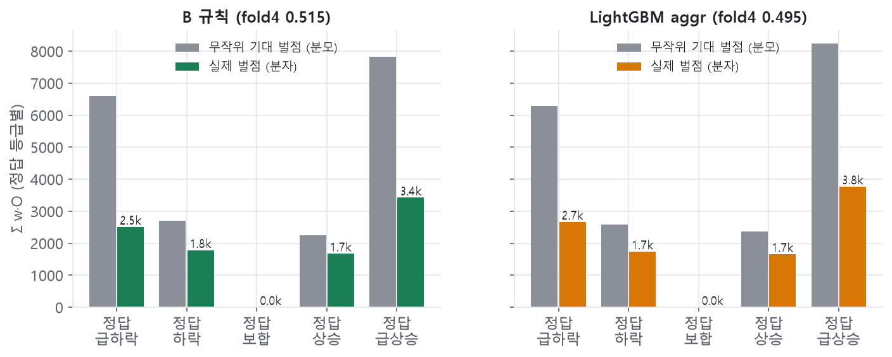
| 정답 | 비율 | 규칙 실제 | 규칙 무작위 | LGB 실제 | LGB 무작위 |
|---|---|---|---|---|---|
| 급하락 | 8.4% | 2,508 | 6,597 | 2,664 | 6,297 |
| 하락 | 26.6% | 1,783 | 2,701 | 1,738 | 2,583 |
| 보합 | 29.1% | 0 | 0 | 0 | 0 |
| 상승 | 24.8% | 1,674 | 2,248 | 1,657 | 2,361 |
| 급상승 | 11.2% | 3,424 | 7,830 | 3,768 | 8,236 |
| 합 | 9,389 | 19,376 | 9,827 | 19,476 |
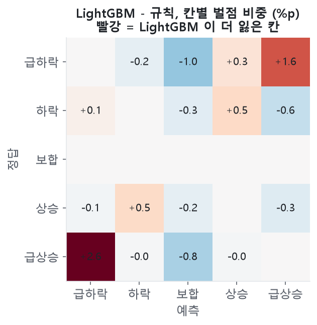
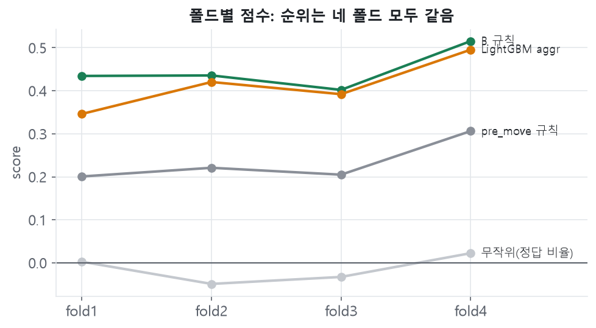
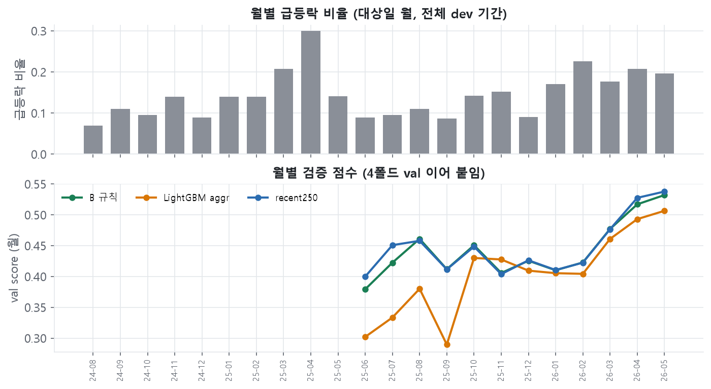
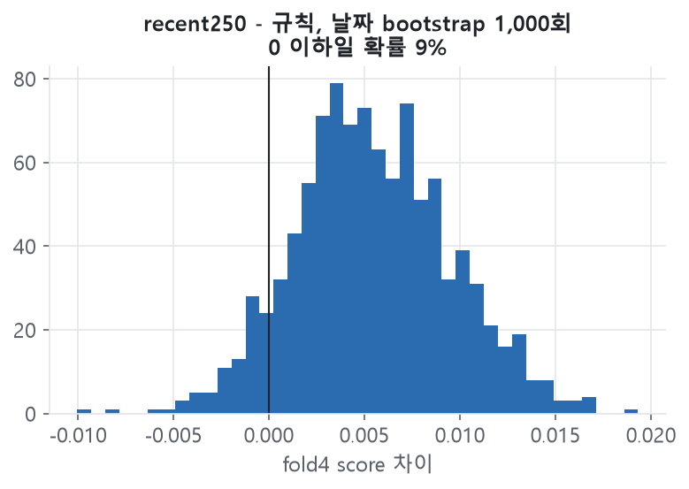
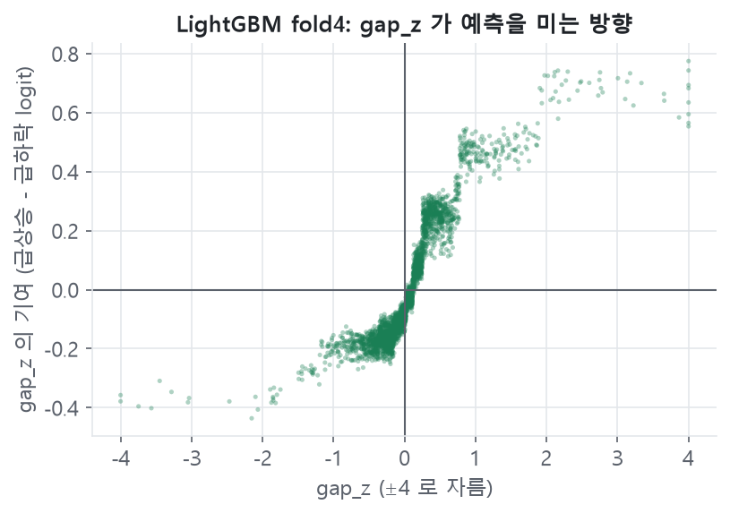
| 종목 | fold4 score | vol20 평균 |
|---|---|---|
| CVS | 0.027 | 0.0204 |
| NFLX | 0.103 | 0.0254 |
| WELL | 0.203 | 0.0150 |
| RTX | 0.381 | 0.0168 |
| TMO | 0.385 | 0.0206 |
| GLW | 0.517 | 0.0478 |
| QCOM | 0.534 | 0.0296 |
| PFE | 0.544 | 0.0130 |
| BA | 0.557 | 0.0225 |
| BKNG | 0.609 | 0.0266 |
scripts/analysis_params.pydocs/presentation/reproduce.csvscripts/analysis_runs.py → experiment_table_raw.csvscripts/analysis_figs.py → figs/, cache/analysis/numbers.json| 항목 | 기존 기록 | 확인한 값 |
|---|---|---|
| 월별 점수의 월 | worklog §2 '기준일 월' | W&B monthly 는 대상일 월 (run_cv 예측의 date 열 = day.y 날짜) |
| recent120 5월 점수 | §8 '5월 0.538~0.541' (세 run) | recent250 0.538, winvote 0.541, recent120 0.533 |
| 'train 이 텍스트 가중치를 0 으로' | §7 세 방식 모두 0 | 신뢰도 γ·방향 β·앙상블 w·κ·θ 는 0. 경계 δ 는 0 아닌 값이 자주 (기사 수 0.3/0/0/0, 실적 단어 0.3/0.3/0/−0.1). text_big γ = −0.1 |
| 무작위 흔들림 | §2.1 ±0.07, §7 ±0.03 | ±0.07 은 폴드 사이 범위, ±0.03 은 fold4 1σ (0.029). 둘 다 맞음 |
| v3 run 태그 | §8 'W&B 태그 v2' | 기록대로임. 다만 v3 를 찾으려면 이름(v3_*)으로 찾아야 함 |
| 기준선 6개 run | score_main · 월별 표 없음 (기능 추가 전 기록). 폴드 점수는 있음 | |
| analysis run vl8iwnuk | 이번 분석 첫 기록. 날짜를 하루 어긋나게 붙인 오차 분석 숫자가 들어 있음 → 고친 뒤 mdaziq90 로 다시 기록, vl8iwnuk 는 삭제 |
| 질문 | 답 (근거) |
|---|---|
| Q1. 왜 딥러닝이나 LLM 으로 예측 안 했나? | 9:30 전에 보이는 정보 중 방향 신호는 갭 하나(일별 IC 0.30)였고, 트리 모델도 기여도를 보면 같은 피처만 씀(10쪽). 학습 행 약 2만 개에서 딥러닝 이점이 없음. LLM 은 예산(14만원 중 절반 권장) 때문에 방향 정보를 뽑는 사건 분류에만 소량 쓸 계획. |
| Q2. 홀드아웃 점수는? | 아직 안 봄. 최종 모델을 정한 뒤 load_folds(ds, holdout=True) 로 한 번만 채점하기로 함. |
| Q3. 과적합 아닌가? | 규칙이 학습하는 숫자는 5개(λ, 경계 a·b, 표준화용 중앙값·표준편차). train 0.454 < fold4 0.515 이고 네 폴드 모두 순위가 같음. 다만 실험 53개를 같은 fold4 로 비교했으니 '골라서 생기는' 과적합은 있음. 그래서 채택 기준과 가짜 피처 비교를 둠. |
| Q4. 갭을 쓰는 건 규칙 위반 아닌가? | 과제 PDF 8쪽: cutoff(대상일 09:30)까지 들어오는 것에 '대상일 개장 전 시간외 거래'가 명시됨. 09:00 봉은 known_at 이 09:30 이라 day.price() 가 자동으로 빼서 실제로 쓰는 마지막 가격은 08:00 봉 종가(EDA 통합본 §5). 모든 예측은 guard 누수 검사 통과. |
| Q5. 왜 fold4 만 보나? | EDA 를 대상일 ~2026-02-13 데이터로 했음. fold1~3 val 은 그 안이라 우리가 이미 본 기간. EDA 와 안 겹치는 건 fold4 뿐. |
| 질문 | 답 (근거) |
|---|---|
| Q6. 0.515 와 0.522 는 다른가? | 날짜 bootstrap 으로 차이 95% 구간 −0.002 ~ +0.014, 0 이하 확률 9%. 그리고 4·5월에만 오름. 지금 데이터로는 구분이 안 됨. |
| Q7. LightGBM 이 왜 규칙보다 못한가? | 학습 손실(로그 손실)이 점수식의 비대칭을 모름. argmax 로 찍으면 보합을 37% 찍어 0.433. 디코딩을 고치면 0.495, 점수식 가중을 넣어도 0.499. 배운 내용은 규칙과 같음(갭 방향 + 변동성 크기). |
| Q8. 텍스트는 정말 쓸모없나? | 크기 신호는 있음(EDA 기사 수 크기 IC 0.086). 문제는 크기만으로는 점수가 안 오른다는 것(9쪽). 기사에서 방향(실적 서프라이즈, 가이던스 상향·하향)을 뽑을 수 있다면 다름. |
| Q9. 처음 보는 종목은 어떻게 하나? | 규칙은 종목 이름 대신 자기 변동성으로 나눠서 그대로 적용됨. fold4 에서 낮은 건 세 종목(CVS·NFLX·WELL) 영향이 큼. 아직 대책은 없고, 10종목 표본이라 운의 몫도 큼. |
| Q10. 10월에 급등락 비율이 바뀌면? | 경계를 |s| 분위로 정해서 예측 비율이 train 분포에 묶여 있음. 10월은 실적 시즌이라 실적일 비중이 커지는데, train 은 실적일에 오히려 덜 크게 찍는 쪽을 고름(9쪽). 최근 창 학습이 이 상황용 후보. |